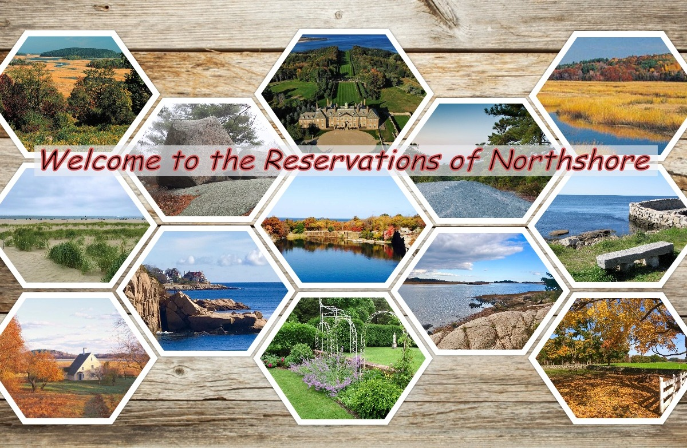

Come explore Northshore's conserved properties by the Trustees of Reservations and Greenbelt Essex County's Land Trust. Whether you want to hike, kayak, run, paint or bird, you’ll find the perfect spot at one of the reservations.
Ascend to where a massive granite monolith juts into the sky, then pass a swamp where another huge boulder has sat as a silent witness for millennia.
Wander past crop fields and cow pastures at one of the country’s oldest continuously operating farms.
Soak up the seaside fun at one of the Northeast's most spectacular beaches, and follow trails and boardwalks through a spellbinding landscape of sand dunes and salt marsh.
Wander through an open field and enjoy a memorable view of the historic Paine House, with the broad estuary of the Ipswich River extending beyond.
Climb to the top of this 168-ft coastal hill and enjoy panoramic views of the Great Marsh and New Hampshire's Isle of Shoals.
Jutting out at a bend in the Little River where it joins the Annisquam River, this jewel provides a beautiful entry to Gloucester along busy Route 128.
Unparalleled views of Ipswich Bay, including Crane Beach and Plum Island, one of the best spots on Cape Ann to sit and watch the sunset.
Show your surpport and help to preserve the historic buildings and conserve local wildlife habitat, critical farmland and beautiful places to enjoy the outdoors in Massachusetts!
The Trustees of Reservations is a non-profit land conservation and historic preservation organization dedicated to preserving natural and historical places in the Commonwealth of Massachusetts. It is the oldest land conservation nonprofit organization of its kind in the world and has 140,000 dues-paying members as of 2018. -Wikipedia